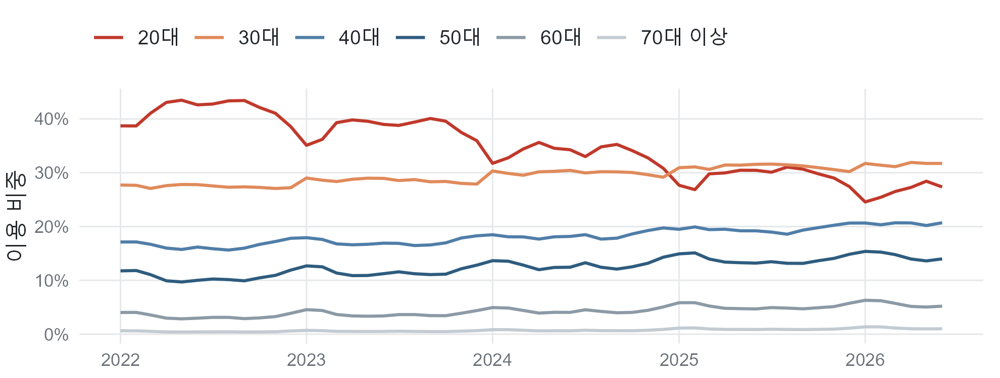
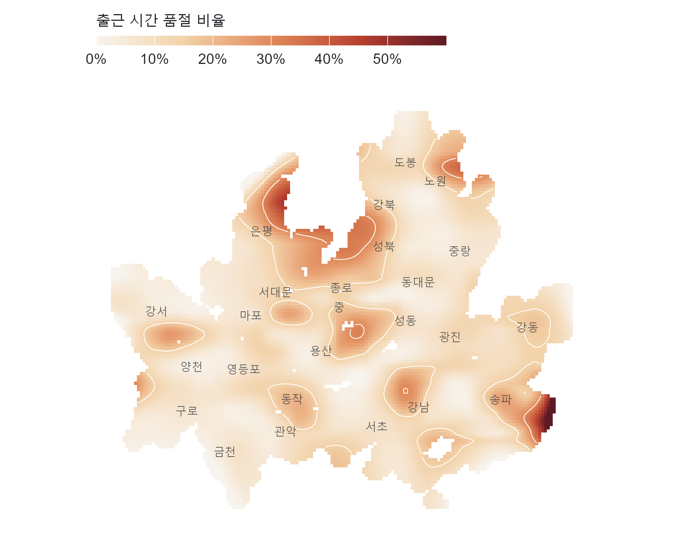
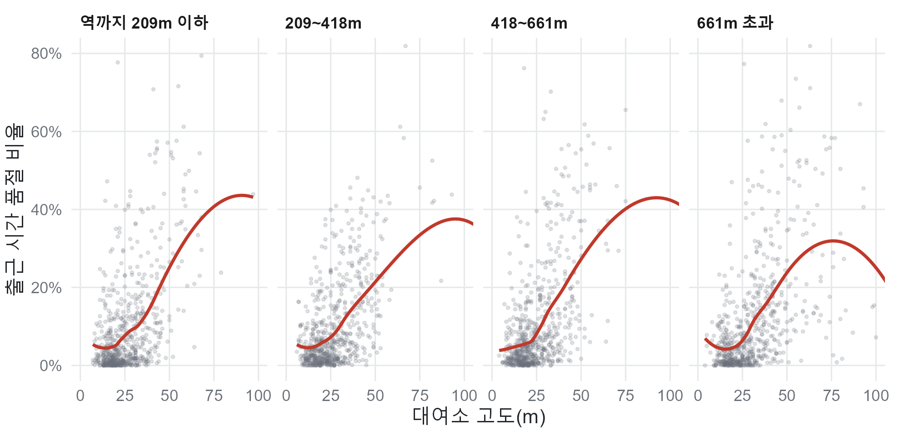
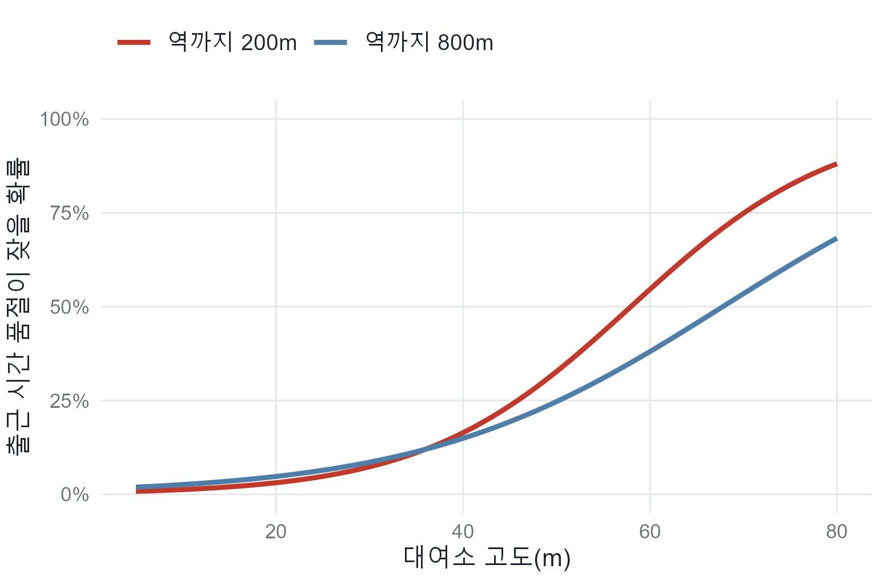
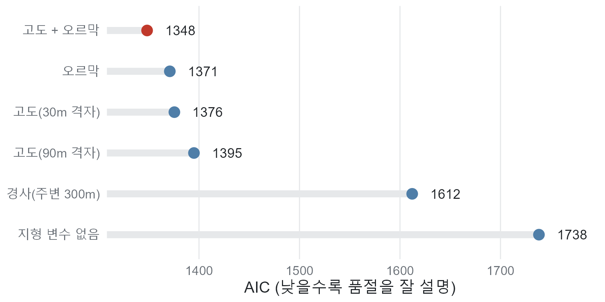
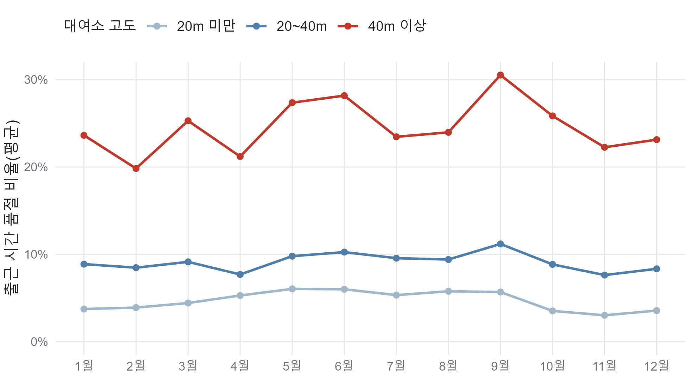
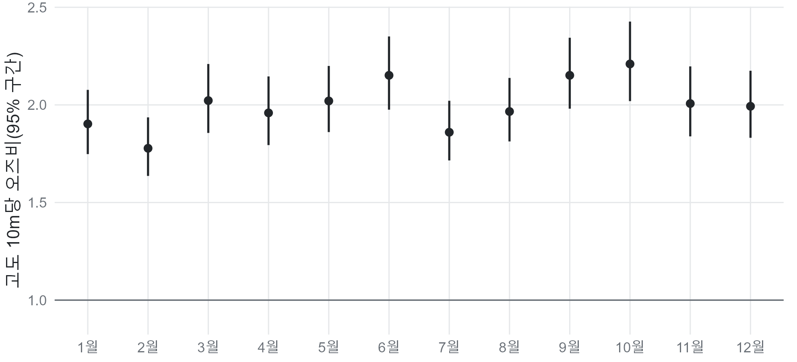
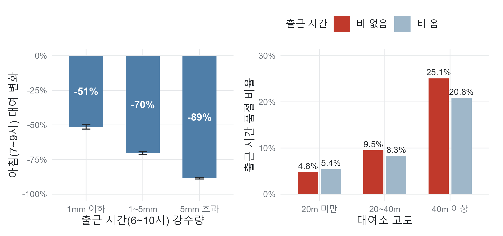

서울 따릉이는 이용이 2년 연속 줄고 민간 공유 전기자전거가 늘면서 적정 규모를 다시 따지는 단계에 있다. 본 프로젝트는 2025년 평일 244일의 서울 대여소 2,713곳 이용 기록과 시간별 재고 기록, 기상청 관측소 27곳의 시간별 날씨를 결합해, 출근 시간에 자전거가 없는 대여소가 어디이며 무엇과 관련되는지 탐색했다. 출근 시간(6~10시)에 비가 온 날을 뺀 분석에서 고도가 10m 높아질 때마다 출근 시간 품절이 잦은 대여소일 오즈는 약 2배였고, 월별로 따로 추정해도 12개월 모두 같은 크기였다. 대여소 주변의 경사는 고도를 대신하지 못했고, 실제 이용이 그 대여소까지 올라와야 하는 높이(오르막)가 품절을 가장 잘 설명했다. 출근 시간에 비가 오면 아침 대여가 51~89% 줄었지만 고지대 대여소의 품절은 25.1%에서 20.8%로만 줄어, 품절이 그날 수요보다 언덕 위로 자전거가 다시 채워지지 않는 구조에서 생김을 보여준다. 이용이 적어 통합 후보로 보이는 대여소 중 30%는 출근 시간에 자주 비는 공급 부족 대여소였고 대부분 고지대에 있었다. 이용 건수만으로 규모를 줄이면 고지대부터 잘릴 수 있다.
따릉이 연간 이용은 2023년 4,491만 건에서 2024년 4,385만 건, 2025년 3,737만 건으로 2년 연속 줄었다. 같은 기간 20대 이용 비중은 약 40%에서 27%로 낮아졌고(그림 1), 서울의 민간 공유 전기자전거는 2025년 45,283대로 따릉이(약 45,000대)를 넘어섰다고 보도됐다. 운영 적자는 2024년 127억 원에서 2025년 176억 원으로 늘었고, 인건비가 운영비의 53%를 차지한다는 보도가 있다.
서울시는 따릉이 감축 검토는 부인했지만, 2020년 연구에서 적정 규모를 45,000대로 산출했고 2026년 현재 서울연구원이 적정 규모와 운영 효율화를 다시 연구하고 있다고 밝혔다. 규모를 줄이는 논의에서는 이용이 적은 대여소를 통합하는 방안이 먼저 거론되기 쉽다. 그러나 이용 건수는 수요뿐 아니라 공급에도 좌우된다. 자전거가 없어 빌리지 못한 수요는 기록에 남지 않기 때문이다.
따라서 규모를 줄이기 전에, 자전거가 실제로 모자라는 곳이 어디인지부터 확인할 필요가 있다.

본 프로젝트의 목적은 따릉이가 출근 시간에 모자라는 대여소의 분포와 관련 요인을 탐색하고, 이용 건수만으로 대여소를 평가할 때 무엇을 놓치는지 보이는 것이다. 적정 대수 자체를 추정하는 것은 범위에서 제외한다.
분석 단위는 서울 25개 구의 따릉이 대여소 2,713곳이고, 기간은 2025년 평일 244일(공휴일 17일 제외)이다. 이용 추이만 2022년 1월부터 2026년 6월까지의 월별 자료를 쓴다.
| 데이터 | 쓰임 |
|---|---|
| 따릉이 대여소별 대여/반납 승객수(서울 열린데이터광장 OA-21229, 5분 단위) | 이용량, 순변화 |
| 대여소별 대여가능 수량(OA-22382, 1시간 단위) | 출근 품절 |
| 공공자전거 이용정보 월별(OA-15248) | 연령대별 이용 추이 |
| 실시간 대여정보(OA-15493), 대여소 정보(OA-13252) | 대여소 위치, 거치대 수, 자치구 |
| 서울시 지하철역 784곳, 대학 53곳 | 역과 대학까지의 거리 |
| Open-Meteo 고도(Copernicus DEM 90m) | 대여소 고도 |
| Copernicus DEM GLO-30(30m 격자) | 대여소 주변 경사 |
| 기상청 방재기상관측(AWS) 시간 자료, 서울 27곳 | 비 온 출퇴근 시간 제외, 날씨별 이용 변화 |
| 서울시 1:5000 수치지도 등고선 8,570개, 표고점 45,870개 | 건물을 뺀 지표면 고도와 경사 |
| 서울 생활인구(행정동, 내국인), 행정동 경계 | 주거 지수(새벽 인구 ÷ 낮 인구) |
| 구분 | 변수 | 정의 |
|---|---|---|
| 종속 | Y1 이용량 | 평일 하루 평균 대여+반납 건수 |
| 종속 | Y2 순변화 | 평일 하루 평균 반납 − 대여(음수면 자전거가 빠져나감) |
| 종속 | Y3 출근 품절 | 출근 시간(6~10시)에 비가 오지 않은 평일의 7~9시 재고 기록 중 0대였던 비율 |
| 설명 | 고도, 지하철역 거리, 대학 거리, 거치대 수 | 대여소별 값 |
| 설명 | 경사 | 대여소 주변 300m 평균 경사(도) |
| 설명 | 오르막 | 이 대여소에 도착한 평일 이용이 출발지보다 평균 몇 m 높이 올라왔는가 |
이동 데이터는 같은 이용이 출발 기준과 도착 기준으로 두 번 집계돼 있어, 대여는 출발 기준, 반납은 도착 기준만 센다. 두 데이터의 대여소 ID 체계가 달라 실시간 대여정보 API로 연결했다.
날씨는 기상청 방재기상관측 서울 27곳의 시간 자료로 맞췄다. 대여소마다 가장 가까운 관측소(중앙값 2.0km)의 강수를 쓰고, 실제 수요가 몰리는 출퇴근 시간의 비만 본다. 출근 품절(7~9시)은 6~10시에, 퇴근 품절(17~19시)은 16~20시에 비가 왔거나 강수 기록이 빠진 평일을 뺐다. 출퇴근 시간 밖의 비는 고려하지 않았고, 대여소마다 출근 시간에 비가 오지 않은 평일 약 210일의 기록이 남는다.
수업에서 다룬 탐색적 방법을 연구 질문마다 하나씩 썼다.
| 연구 질문 | 방법 |
|---|---|
| 1. 어디에 몰려 있나 | 대여소 좌표에 대한 LOESS 곡면과 level plot, 고도 구간(20m, 40m)별 비교 |
| 2. 무엇과 함께 움직이나 | 고도와 Y2, Y3의 LOESS 산점도와 잔차 그림, 지하철역 거리 사분위별 coplot, 로지스틱 회귀, 고도와 경사와 오르막의 AIC 비교 |
| 3. 이용이 적은 곳 중 공급 부족 | 이용량의 로그 변환과 분포 비교, 대여소 역할 분류, 고도 구간과의 모자이크 그림과 카이제곱 검정 |
| 4. 1년 내내 같은가 | 월별 상관과 월별 로지스틱 회귀, 품절 기준값(20%, 30%, 40%) 바꾸기 |
| 5. 비가 와도 같은가 | 출근 시간에 비가 온 날과 오지 않은 날의 대여소별 품절 짝 비교, 날씨별 대여 변화 회귀(관측소 구역, 월, 요일 고정) |
로지스틱 회귀의 결과 변수는 출근 시간에 비가 오지 않은 날의 출근 품절 비율이 30% 이상인 대여소(전체의 9.8%)이고, 설명변수는 고도(10m 단위), 지하철역과 대학까지 거리(로그), 거치대 수다. 고도와 지하철역 거리의 상호작용도 확인했다.
대여소 역할은 서울 전체 분포를 기준으로 나눴다. 이용 하위 20%이고 300m 안에 다른 대여소가 있으면 통합 후보이고, 그중 Y3이 30% 이상이면 공급 부족 의심으로 분류했다. 이용이 중앙값 이상이고 대여의 절반 이상이 출퇴근 시간이면 출퇴근 핵심으로 분류했다.
출근 시간 품절 비율은 고도 20m 미만 4.8%, 20~40m 9.5%, 40m 이상 25.1%였다. 위치 지도에서는 북쪽 산자락(은평, 종로, 성북)과 남쪽 일부, 동남쪽 끝에 몰려 있었다(그림 2). 같은 고도 구간에서 순변화는 20m 미만 하루 +1.3대(쌓임), 40m 이상 −3.7대(빠져나감)였다. 퇴근 시간(17~19시)에도 같은 대여소가 비어, 퇴근 품절과 고도의 순위상관은 0.52였다.

지하철역 거리 사분위로 대여소를 나눠도 네 묶음 모두에서 고도가 높을수록 품절이 늘었다(그림 3). 다른 변수를 함께 넣은 로지스틱 회귀에서도 고도의 오즈비가 가장 컸다(표 4).

| 설명변수 | 오즈비 | 95% 신뢰구간 | p |
|---|---|---|---|
| 고도(10m) | 2.10 | 1.91~2.30 | < 0.001 |
| 지하철역 거리(두 배) | 0.97 | 0.88~1.07 | 0.51 |
| 대학 거리(두 배) | 1.04 | 0.91~1.18 | 0.59 |
| 거치대 수(1개) | 0.94 | 0.90~0.97 | 0.001 |
대여소 2,713곳, 출근 시간에 비가 오지 않은 날 기준, 상호작용이 없는 모형.
지하철역 거리는 단독으로는 관련이 없었지만 고도와의 상호작용은 유의했다(p < 0.001). 고지대일수록 역에 가까운 대여소의 품절 위험이 더 컸다(그림 4).

경사는 고도를 대신하지 못했다. 대여소 주변 300m 평균 경사(Copernicus 30m)를 넣은 모형의 AIC는 1580으로 고도(1365)보다 컸고, 둘을 함께 넣으면 경사의 효과가 사라졌다(오즈비 0.90, 95% 신뢰구간 0.77~1.05). 가장 잘 설명한 변수는 오르막이었다(AIC 1352, 그림 5). 고도와 오르막을 함께 넣으면 둘 다 남아(1 표준편차당 오즈비 1.71과 1.91, AIC 1336), 대여소가 높은 곳에 있다는 사실과 이용이 그곳까지 올라와야 하는 높이가 각각 품절과 관련됐다.
건물 높이가 섞인 고도 자료 때문일 수도 있어, 서울시 1:5000 수치지도의 등고선과 표고점으로 지표면 고도를 만들어 다시 계산했다. Copernicus 고도는 지표면보다 중앙값 2.2m 높았고 경사는 두 배로 부풀어 있었지만, 결론은 같았다. 지표면 경사도 고도와 함께 넣으면 효과가 없었고(오즈비 0.94, 0.80~1.11), 지표면 고도로 계산한 오르막이 가장 잘 설명했으며(AIC 1335), 지표면 고도 10m당 오즈비는 2.30(2.08~2.54)이었다.
언덕 위가 주거지라서 비는 것도 아니다. 서울 생활인구로 행정동마다 새벽(2~4시) 인구를 낮(13~15시) 인구로 나눈 주거 지수를 만들어 대여소에 붙였다. 고지대가 조금 더 주거지였지만(순위상관 0.17), 주거 지수를 함께 넣어도 고도 효과는 그대로였고(1 표준편차당 오즈비 3.03에서 3.01) 주거 지수의 효과는 사라졌다(1.08, 0.94~1.25). 업무지구에 가까운 동네(주거 지수 하위 3분의 1)에서도 고도 10m당 오즈비는 2.67로, 언덕 위는 주거지든 아니든 비었다.

통합 후보 427곳 중 128곳(30%)이 출근 시간에 자주 비는 공급 부족 의심 대여소였고, 그중 95곳이 고도 40m 이상이었다. 반대로 출퇴근 핵심 대여소 417곳 중 291곳은 20m 미만이었다(카이제곱 720, p < 0.001).
고도와 출근 품절의 상관은 12개월 모두 0.40~0.55였고, 월별 로지스틱 회귀의 고도 오즈비는 1.75~2.18로 매달 유의했다(그림 7). 고도 구간별 품절 비율도 매달 같은 순서를 유지했다(그림 6). 월별 분석은 전체 평일 기준이다. 품절 기준을 20%, 40%로 바꿔도 오즈비는 2.08~2.30이었고, 출근 시간 대신 하루 강수 1mm로 비 온 날을 정해도 2.08이었다.


출근 시간(6~10시)에 비가 오면 아침(7~9시) 대여는 강수량에 따라 51~89% 줄었다(관측소 구역, 월, 요일 고정, 그림 8 왼쪽). 그러나 같은 날 아침 고도 40m 이상 대여소의 품절 비율은 25.1%에서 20.8%로만 줄었고(그림 8 오른쪽), 비 온 출근 시간만으로 추정한 고도 오즈비도 1.87(1.71~2.05)이었다. 전날 비가 와서 이용이 적었던 다음 날 아침에도 고지대 품절은 25.3%로 줄지 않았다. 한편 아침 기온이 0도 미만이면 아침 대여가 24% 줄고, 풍속 4m/s 이상이면 21% 줄었다.

25개 구에서 대여소 주변 평균 경사(지표면 기준)가 1도 높을수록 대여소당 평일 대여가 17.5% 적었다(R² 0.45, p < 0.001). 이용 상위 3개 구인 강서, 송파, 영등포의 평균 경사는 1.6도로 나머지 22개 구(3.7도)의 절반 아래였다. 경사는 얼마나 많이 타는지(수요)와, 고도와 오르막은 어디가 비는지(불균형)와 관련됐다. 다만 구는 25개뿐이고 평평한 구는 대부분 한강변이라 다른 이유가 섞였을 수 있다.
첫째, 이용 건수는 대여소의 필요성을 재는 지표로 불충분하다. 이용이 적은 대여소의 약 3분의 1은 자전거가 없어서 이용이 적을 가능성이 있고, 이들은 고지대에 몰려 있다. 이용 건수만으로 대여소를 통합하면 이미 공급이 부족한 고지대가 먼저 줄어든다.
둘째, 접근성보다 지형이 중요했다. 지하철역과 대학까지의 거리는 단독으로는 품절과 관련이 없었다. 다만 고지대에서는 역에 가까울수록 품절이 잦아, 언덕 위 역세권이 아침 공급의 우선순위가 될 수 있다.
셋째, 거치대 수가 많을수록 품절이 적었다. 규모를 조정한다면 고지대 대여소의 거치대와 아침 재고는 유지하거나 늘리고, 자전거가 늘 쌓이는 저지대에서 줄이는 방향을 검토할 수 있다.
넷째, 고지대 품절은 그날 수요보다 공급 구조의 문제다. 출근 시간에 비가 와서 이용이 크게 줄어든 아침에도 언덕 위는 다섯 번 중 한 번 비었다. 이용을 조절하는 정책보다 아침이 오기 전에 언덕 위 대여소를 채우는 재배치가 먼저다.
따릉이가 출근 시간에 모자라는 곳은 언덕 위다. 출근 시간에 비가 온 날을 빼도 고도 10m마다 품절이 잦은 대여소일 오즈는 약 2배였고, 이 관계는 서울 전역에서 1년 내내 같았다. 품절은 대여소 앞 길의 경사가 아니라 이용이 올라와야 하는 높이와 함께 움직였고, 이용이 크게 줄어드는 비 오는 출근 시간에도 남았다. 따라서 따릉이 규모를 조정할 때는 이용 건수뿐 아니라 출근 시간 품절과 지형을 함께 봐야 하며, 줄이더라도 고지대의 아침 공급은 지켜야 한다.
STA3115 기말 프로젝트 1조. 발표 2026년 11월 26일(목, 15분), 발표 전 게시판에 shinyapps.io 주소 게시, 12/08~12/14 주에 데이터를 포함한 앱 압축 파일과 슬라이드 제출.
| 탭 | 보여줄 것 | 위젯 |
|---|---|---|
| 현황 | 연도별, 월별 이용과 연령대 비중 | 기간 슬라이더, 연령대 선택 |
| 규모 | 시간대별 서 있는 자전거와 타는 자전거 | 자치구 선택 |
| 흐름 | 고도와 순변화, 지하철역 거리별 비교, 시간대별 순변화 지도 | 자치구 선택, 시간 슬라이더, 평일/주말 |
| 품절 | 품절 지도와 고도별 예측 확률 | 고도, 역 거리 입력 |
| 대여소 | 역할 지도와 표, 자치구별 이용량 분포 | 통합 기준 슬라이더 |
| 기간 | 할 일 |
|---|---|
| 11/17~11/19 | Shiny 탭 구현 |
| 11/20~11/23 | 앱 완성과 배포, 슬라이드 초안 |
| 11/24~11/25 | 앱 주소 게시, 발표 연습 |
| 11/26 | 발표 |
| 12/08~12/14 | 최종 제출 |